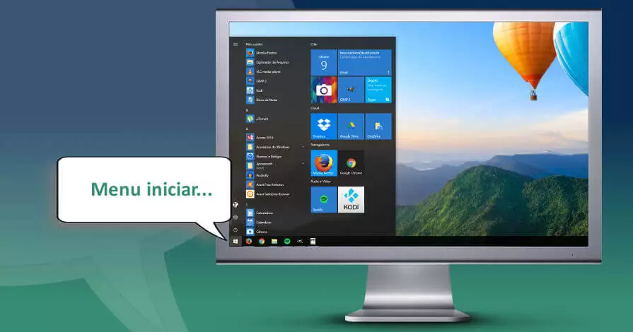

Softwares Leitores de TelaS

Os leitores de tela são softwares que, interagindo com o Sistema Operacional do computador, capturam toda e qualquer informação apresentada na forma de texto e a transforma em fala por meio de um sintetizador de voz.
- NVDA (Windows): Leitor de tela que interage com o sistema operacional e transforma conteúdo textual em fala.
- Orca (Linux): Leitor de tela livre e gratuito, desenvolvido para o sistema operacional Linux. Aconselha-se a instalação da distribuição Ubuntu com interface gráfica GNOME, pois o software já vem instalado como recurso de acessibilidade padrão. Além de ser um leitor de tela, o aplicativo é também um ampliador, oferecendo recurso de lupa.
- VoiceOver (iOS): Leitor de tela que vem instalado como recurso de acessibilidade padrão dos dispositivos da Apple.
- TalkBack (Android): É o leitor de tela do Google incluído em dispositivos Android.
- DOSVOX (Windows): Não se trata de um leitor de tela, mas de um software voltado a pessoas com deficiência visual, que se comunica com o usuário através de síntese de voz e o auxilia em diversas tarefas no computador.